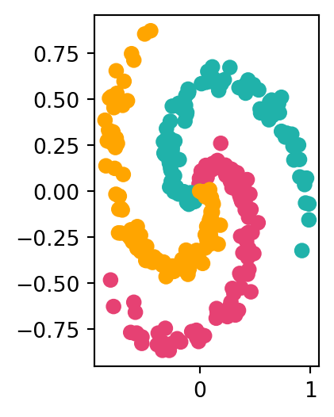

Розділіть дані на навчальні та тестові набори (80% / 20%), а також перетворіть їх у тензори PyTorch.
Створіть модель, здатну оцінити дані (може знадобитися комбінація лінійних і нелінійних шарів).
Створіть функцію втрат і оптимізатор, здатні обробляти багатокласові дані1.
Створіть цикл навчання та тестування для багатокласових даних і навчіть модель на ньому, щоб досягти точності тестування понад 95% (ви можете використовувати будь-яку функцію вимірювання точності, яка вам подобається) — 1000 епох має бути достатньо.
Намалюйте межі прийняття рішень на наборі даних спіралей з прогнозів вашої моделі, функція plot_decision_boundary() також повинна працювати для цього набору даних.
Код для створення спірального набору даних з CS231n
import numpy as npimport matplotlib.pyplot as pltfrom matplotlib.colors import ListedColormapred_pink ="#e64173"turquoise ="#20B2AA"orange ="#FFA500"np.random.seed(73)1N =1002D =23K =34X = np.zeros((N*K,D))5y = np.zeros(N*K, dtype='uint8')for j inrange(K): ix =range(N*j,N*(j+1))6 r = np.linspace(0.0,1,N)7 t = np.linspace(j*4,(j+1)*4,N) + np.random.randn(N)*0.2 X[ix] = np.c_[r*np.sin(t), r*np.cos(t)] y[ix] = jplt.figure(figsize=(1.9,3))plt.scatter(X[:, 0], X[:, 1], c=y, s=40, cmap=ListedColormap([red_pink, turquoise, orange]))plt.show()
1
Кількість точок на клас
2
Кількість вимірів (фіч)
3
Кількість класів
4
Ініціалізація матриці фіч
5
Ініціалізація вектору міток
6
Радіус (від 0 до 1)
7
\(\theta\) — кутова координата (з шумом)

Комп’ютерний зір
Завантажте набір даних Places3652 за допомогою torchvision.datasets і розділіть його на навчальний і тестовий набори.
Visualize at least 5 random images from the dataset along with their corresponding labels.
Передайте навчальну та тестову вибірки в DataLoader з розміром батчу 32.
Відтворіть модель з лекції і навчіть її на навчальному наборі даних.
Навчіть модель, яку ви створили, протягом 5 епох на CPU та GPU і подивіться, скільки часу це займе на кожному з них.
Зробіть прогнози, використовуючи навчену модель, і візуалізуйте принаймні 5 з них, порівнюючи прогноз із цільовою міткою.
Побудуйте матрицю невідповідності, порівнюючи прогнози вашої моделі з істинними мітками.
Створіть випадковий тензор форми [1, 3, 64, 64] і пропустіть його через шар nn.Conv2d() з різними налаштуваннями гіперпараметрів (це можуть бути будь-які налаштування на ваш вибір). Що ви помітите, якщо параметр kernel_size збільшиться або зменшиться?
Примітки
Опціонально: використовуйте оптимізатор Adam замість SGD, можливо, доведеться поекспериментувати з різними значеннями швидкості навчання, щоб він запрацював↩︎
Якщо ви не можете завантажити повний набір даних Places365 через обмеження пропускної здатності, ви можете використовувати менший піднабір або інший доступний набір даних з torchvision.datasets, наприклад, CIFAR-10. Але не використовуйте “класику” MNIST.↩︎